Peer reviews: revisando el código en equipo
DrupalCamp Spain 2015
Rodrigo Aguilera y Juampy NR
Sobre nosotros

 Juampy NR - @juampynr
Juampy NR - @juampynr
Back end developer
about.me/juampynr
Rodrigo Aguilera - @marinero
Developer
rodrigoaguilera.net
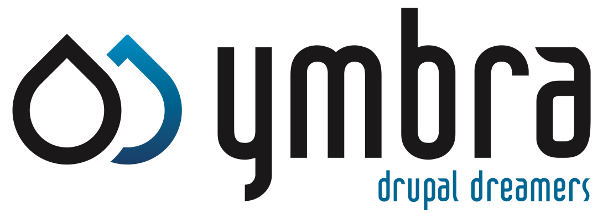
¿En qué consiste un peer review?
Ejemplo práctico
Primera parte
1 Sally crea una issue
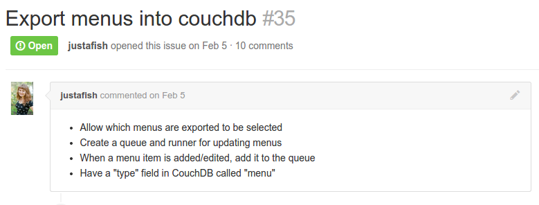2 Betty trabaja en la issue

3 Betty crea un pull request
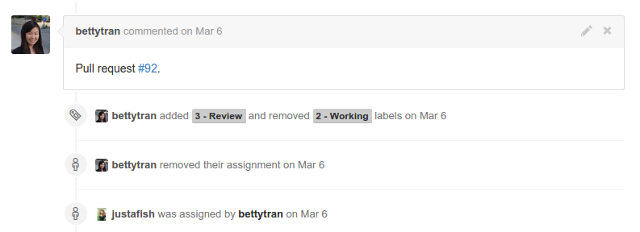4 Pull request listo para peer review
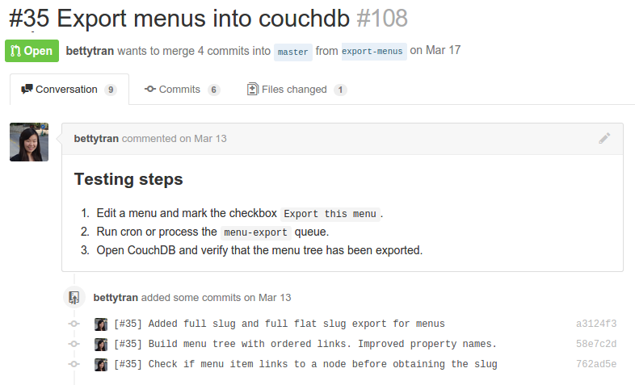5 Comienza el peer review
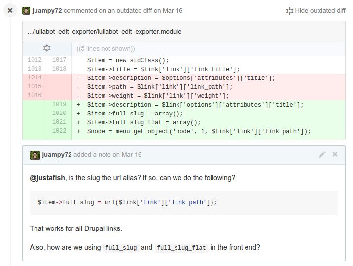6 Revisando el código
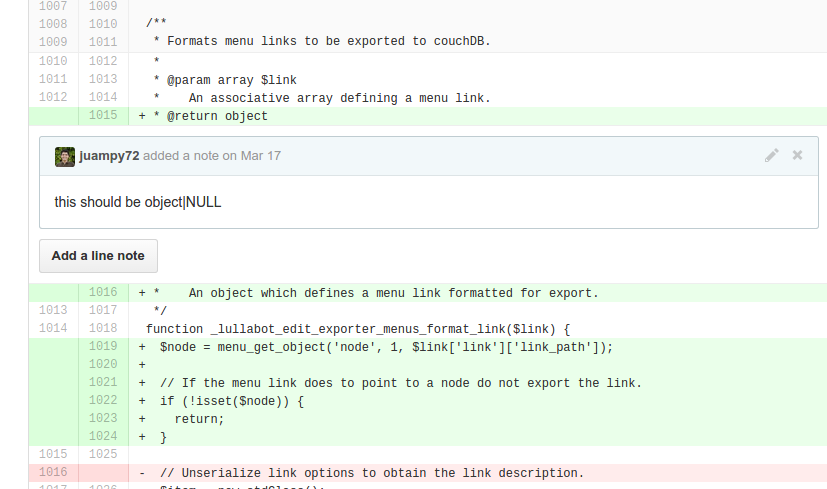7 Verificando la lógica
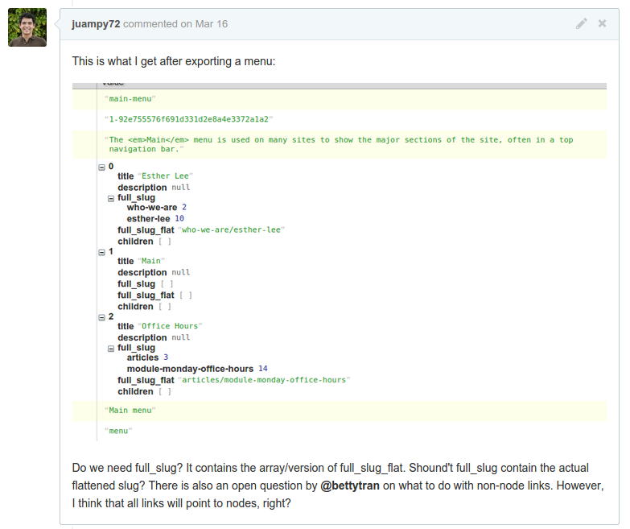8 Comunicar los resultados
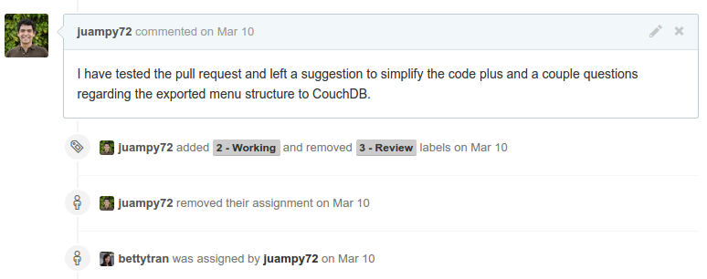9 Reajustar y sugerir un nuevo peer review
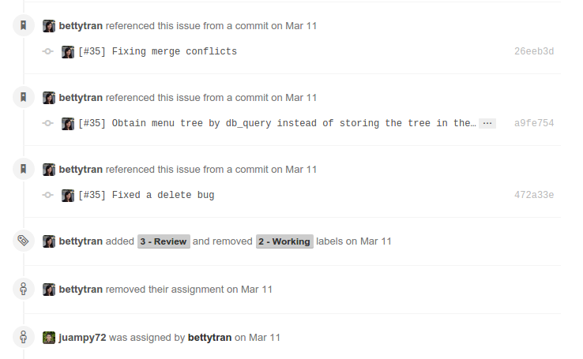10 Segundo peer review
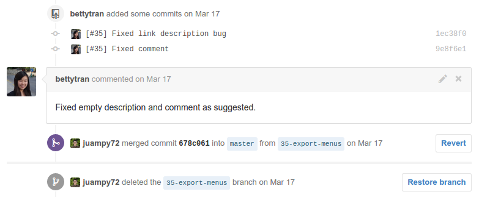11 Cerrar la issue
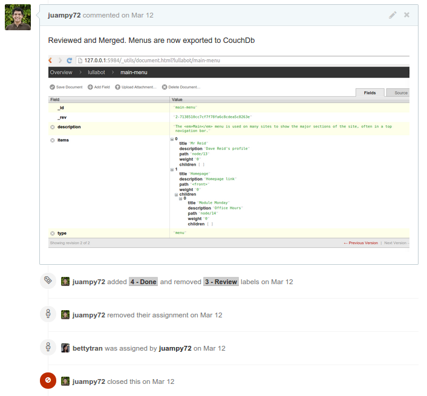¿Por qué es beneficioso?
Asegurar estabilidad del código
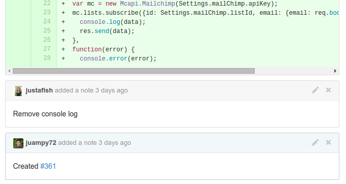Mantener un código homogéneo
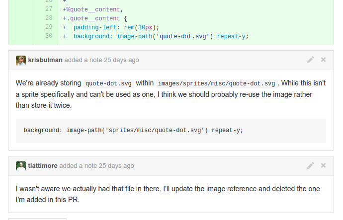Aprender en equipo
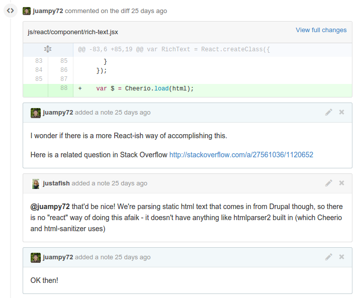Compartir la responsabilidad
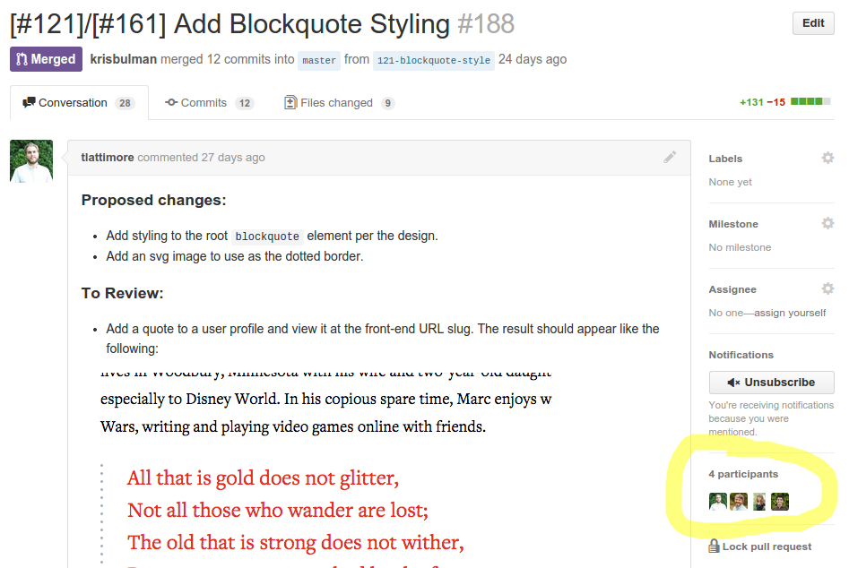Involucrar a otros roles
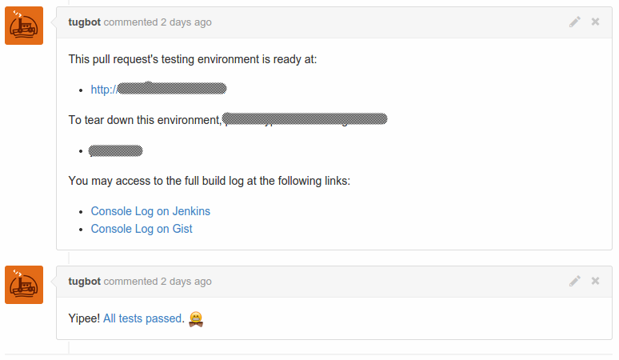Aspectos a definir en equipo antes de comenzar a hacer peer reviews
Cómo preparar un pull request
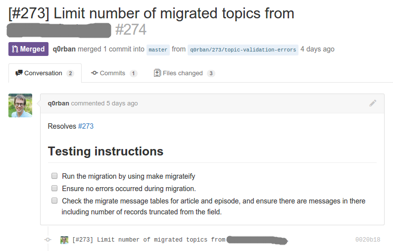Qué se va a revisar
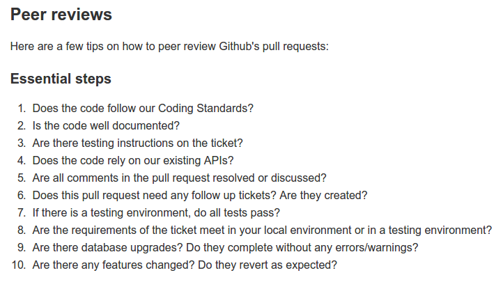Qué estándares se van a seguir
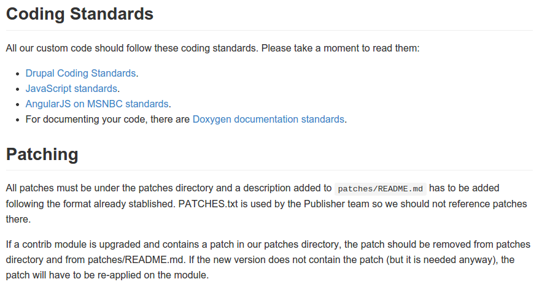Cuándo un ticket está resuelto
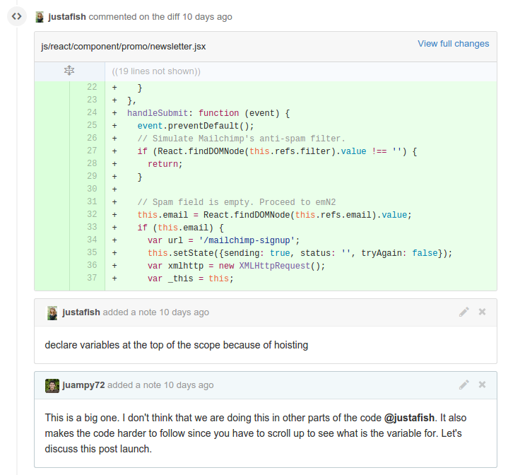Segunda parte
Prepararse para hacer el cambio
- Un cambio en la cultura de equipo
- Intentar tener en código todo lo posible
- Saca tu código a la luz
- No todo es codigo fuente
- Codigo de terceros
Conceptos
- Pre/Post commit review
- Proceso sistemático
- Revisión por humanos o máquinas
Pair programming
Revisión por parte de maquinas
- Estandares de código
- Testing
- Análisis estatico de código (Complejidad, duplicados...)
- Te salvan de ser pedante
Revisión por parte de humanos
Todavía somos irremplazables en algunos aspectos
- Requerimientos
- Arquitectura
- Coding idioms
- Código reusable, futureproof
- Conocimiento del dominio
Nuevos desarrolladores
Nuevos desarrolladores
- Ganan experiencia
- Seguridad a la hora de integrar código
- Revisar y ser revisado es un reto
Otras maneras de proponer un cambio
- Ficheros patch (Drupal.org)
- Differential (Phabricator suite) - PHP
- Redmine
- Gerrit
- https://en.wikipedia.org/wiki/List_of_tools_for_code_review
Cambios percibidos
- El código se hace digerible
- Conversaciones sobre código
- Revisión temprana de la arquitectura
- Uso de pastebin
- Conocimiento global de la aplicación
Enlaces de interés
¡Gracias! ¿Preguntas?
Juampy NR
@juampynr
about.me/juampynr
Rodrigo Aguilera
@marinero
rodrigoaguilera.net